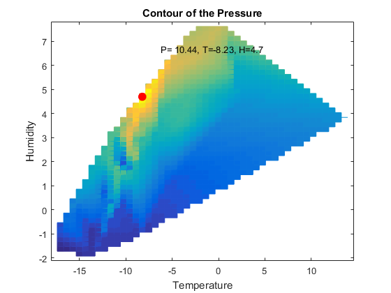

Contents
Retrieve data from ThingSpeak channel
readChannelID = 56612;
dateRange = [datetime('yesterday'),datetime('today')];
[data,time,channelInfo] = thingSpeakRead(readChannelID,'Fields',1:8,'DateRange',dateRange);
compresor = data(:,1);
ventilador = data(:,2);
resistencia = data(:,3);
puerta1 = data(:,4);
puerta2 = data(:,5);
congelador = data(:,6);
conservador = data(:,7);
frutas = data(:,8);
Temperature, Humidity, Pressure, Rain, WindSpeed, WindDirection histogram
figure
subplot(2,3,1)
histogram(congelador);
title(channelInfo.FieldDescriptions{1});
grid on
subplot(2,3,2)
histogram(conservador);
title(channelInfo.FieldDescriptions{2});
grid on
subplot(2,3,3)
histogram(frutas);
title(channelInfo.FieldDescriptions{3});
grid on
subplot(2,3,4)
histogram(puerta1);
title(channelInfo.FieldDescriptions{4});
grid on
subplot(2,3,5)
histogram(puerta2);
title(channelInfo.FieldDescriptions{5});
grid on
rad = ventilador*pi/180;
rad = -rad+pi/2;
subplot(2,3,6)
rose(rad,12)
title(channelInfo.FieldDescriptions{7})
ax = gca;
ax.View = [-90 90];
Smooth Temperature and Trend
idx = ~isnan(congelador);
rawTemp = congelador(idx);
newTime = time(idx);
smoothTemp = movmean(congelador(idx),60);
[p,~,mu]= polyfit(datenum(newTime),rawTemp,1);
trend = polyval(p,datenum(newTime),[],mu);
f = fit(datenum(newTime),rawTemp,'sin8');
figure
hold on
plot(newTime,rawTemp,'b')
plot(newTime,smoothTemp,'g','LineWidth',1.5)
plot(newTime,trend,'m','LineWidth',2)
plot(f)
hold off
xlim([datenum(time(1)) datenum(time(end))])
xlabel('Date')
ylabel('Temperature (F)')
legend({'Raw Data','Smooth Data','Trend','Fitting Curve'},'Location','NE')
Daily Temperature Statistics
idx = ~isnan(congelador);
rawTemp = congelador(idx);
newTime = time(idx);
figure
hold on
timeShift = dateshift(newTime,'start','day');
dayGroup = findgroups(timeShift);
splitapply(@plot,second(newTime,'secondofday')/3600,rawTemp,dayGroup);
hourGroup = findgroups(hour(newTime));
tMax = splitapply(@max,rawTemp,hourGroup);
tMin = splitapply(@min,rawTemp,hourGroup);
tMean = splitapply(@mean,rawTemp,hourGroup);
xHalf = [0,repelem(1:23,2),24];
x = [xHalf, fliplr(xHalf)];
tMax = repelem(tMax,2);
tMin = repelem(tMin,2);
tMean = repelem(tMean,2);
y = [tMin; flipud(tMax)];
plot([0,24], [max(tMax),max(tMax)],'.--k', 'LineWidth',1.5)
plot([0,24], [min(tMin),min(tMin)],'.--k', 'LineWidth',1.5)
h1 = fill(x,y, 'b', 'LineStyle', 'none', 'FaceAlpha', 0.1);
h2 = plot(xHalf,tMean,'--','LineWidth',2);
hold off
title('Daily temperature over the past week')
ylabel('Temperature (F)')
xlabel('Day Time')
axis tight
ylim([20 80])
ax = gca;
ax.XTick = 1:24;
legend([h1,h2],'Variation per hour','Average per hour')
Compare with historical temperature data on March 7, 2011-2015
rawData = load('March7');
rawData = struct2cell(rawData);
m = zeros(24,length(rawData));
for i = 1:length(rawData)
histData = rawData{i};
hourGroup = findgroups(hour(histData.TimeEST));
m(:,i) = splitapply(@mean,histData.TemperatureF,hourGroup);
end
histMax = max(m,[],2);
histMin = min(m,[],2);
histMean = mean(m,2);
temp = congelador(month(time)==3 & day(time)==7);
s = second(time(month(time)==3 & day(time)==7),'secondofday');
s = s/3600;
figure
subplot(2,1,1)
plot(m, 'LineWidth',2)
title('Daily Temperature on March 7, 2011-2015')
ylabel('Temperature (F)')
legend({'2011','2012', '2013', '2014','2015'})
ax = gca;
ax.XTick = 1:24;
subplot(2,1,2)
hold on
plot(s,temp,'g', 'LineWidth',2)
plot(histMax,'--','LineWidth',2)
plot(histMin,'--','LineWidth',2)
plot(histMean,'--','LineWidth',2)
hold off
title('Daily Temperature on March 7 - Current v.s. History')
ylabel('Temperature (F)')
legend({'March 7, 2016','Historical Max', 'Historical Min', 'Historical Mean'})
ax = gca;
ax.XTick = 1:24;
Warning: Ignoring extra legend entries.
Temperature and Humidity 3D bar charts
dayRange = day(dateRange(1):dateRange(2));
weatherData = zeros(length(dayRange),24);
for m = 1:length(dayRange)
for n = 1:24
if any(day(time)==dayRange(m) & hour(time)==n);
hourlyData = congelador((day(time)==dayRange(m) & hour(time)==n));
weatherData(m,n) = hourlyData(1);
end
end
end
figure
h = bar3(datenum(dateRange(1):dateRange(2)), weatherData);
for k = 1:length(h)
h(k).CData = h(k).ZData;
h(k).FaceColor = 'interp';
end
title('Temperature Distribution')
xlabel('Hour of Day')
ylabel('Date')
datetick('y','mmm dd')
ax = gca;
ax.XTick = 1:24;
ax.YTickLabelRotation = 30;
colorbar
for m = 1:length(dayRange)
for n = 1:24
if any(day(time)==dayRange(m) & hour(time)==n);
hourlyData = conservador((day(time)==dayRange(m) & hour(time)==n));
weatherData(m,n) = hourlyData(1);
end
end
end
figure
h = bar3(datenum(dateRange(1):dateRange(2)), weatherData);
for k = 1:length(h)
h(k).CData = h(k).ZData;
h(k).FaceColor = 'interp';
end
title('Humidity Distribution')
xlabel('Hour of Day')
ylabel('Date')
datetick('y','mmm dd')
ax = gca;
ax.XTick = 1:24;
ax.YTickLabelRotation = 30;
colorbar
Interpolation and contour for Temperature, Humidity and Pressure
xNew = linspace(1,size(data,1),100)';
tNew = interp1(congelador(~isnan(congelador)),xNew,'linear','extrap');
hNew = interp1(conservador(~isnan(conservador)),xNew,'linear','extrap');
pNew = interp1(frutas(~isnan(frutas)),xNew,'linear','extrap');
[pMax,idx] = max(pNew);
sf = fit([tNew,hNew],pNew,'linearinterp');
figure
hsf = plot(sf,[tNew,hNew],pNew);
hsf(1).EdgeColor = 'interp';
hsf(1).FaceAlpha = 0.5;
xlabel('Temperature')
ylabel('Humidity')
zlabel('Pressure')
title('Linear Interpolation Surface')
figure
hsf = plot(sf);
hsf.EdgeColor = 'interp';
hold on
plot3(tNew(idx),hNew(idx),pMax,'r.', 'MarkerSize',30)
text(tNew(idx)+2,hNew(idx)+2,pMax,['P= ',num2str(pMax),', T=',...
num2str(tNew(idx)),', H=',num2str(hNew(idx))])
title('Contour of the Pressure')
xlabel('Temperature')
ylabel('Humidity')
grid off
view(2)
hold off

Dew Point
tempC = (5/9)*(congelador-32);
b = 17.67;
c = 243.5;
gamma = log(conservador/100) + b*tempC ./ (c+tempC);
dewPoint = c*gamma ./ (b-gamma);
dewPointF = (dewPoint*1.8) + 32;
figure
hold on
plot(time, dewPointF,'d')
xlabel('Time')
ylabel('Dew Point')
xlim([datenum(time(1)) datenum(time(end))])
fill([xlim fliplr(xlim)], [68 68 80 80], 'r', 'LineStyle', 'none', 'FaceAlpha', 0.1)
text(0.7*datenum(time(1)) + 0.3*datenum(time(end)), 75, 'Uncomfortable', 'FontWeight','bold')
fill([xlim fliplr(xlim)], [50 50 68 68], 'g', 'LineStyle', 'none', 'FaceAlpha', 0.1)
text(0.7*datenum(time(1)) + 0.3*datenum(time(end)), 60, 'Comfortable', 'FontWeight','bold')
fill([xlim fliplr(xlim)], [min(ylim) min(ylim) 50 50], 'y', 'LineStyle', 'none', 'FaceAlpha', 0.1)
text(0.65*datenum(time(1)) + 0.35*datenum(time(end)), 20, 'Dry', 'FontWeight','bold')
hold off
Warning: Imaginary parts of complex X and/or Y arguments ignored
Wind Compass and Feather
n = 9;
rad = ventilador*pi/180;
idx = (~isnan(rad)) & (~isnan(puerta2)) & (puerta2~=0);
[x,y] = pol2cart(rad(idx),puerta2(idx)/max(puerta2(idx)));
figure
subplot(2,1,2)
feather(x((end-n):end),y((end-n):end))
xlim([0 n+2])
ylim([-1 1])
xlabel(['The last ',num2str(n+1),' wind direction'])
title('Wind Direction Changes')
grid on
ax = gca;
ax.YTickLabel = {};
ax.XTick = 1:(n+1);
rad = -rad+pi/2;
u = cos(rad) .* puerta2;
v = sin(rad) .* puerta2;
subplot(2,1,1)
compass(u((end-n):end),v((end-n):end))
title('Wind Compass')
ax = gca;
ax.View = [-90 90];
Error using .*
Matrix dimensions must agree.
Error in pol2cart (line 21)
x = r.*cos(th);
Error in ThingSpeakWeatherStation (line 362)
[x,y] = pol2cart(rad(idx),puerta2(idx)/max(puerta2(idx)));
Instant Weather Flag
theta = ventilador(end)*pi/180;
maxWindSpeed = 5;
speedAngle = pi/2*puerta2(end)/maxWindSpeed;
ytheta = pi-speedAngle;
ConeRadius = 0.1;
xMax = 1.5;
xMin = -xMax;
yMax = 1.5;
yMin = -yMax;
zMax = 1.5;
zMin = -0.5;
yRotate = [cos(ytheta) 0 sin(ytheta);
0 1 0;
-sin(ytheta) 0 cos(ytheta)];
zRotate = [cos(theta) -sin(theta) 0;
sin(theta) cos(theta) 0;
0 0 1];
t = [0;ConeRadius];
[X,Y,Z]=cylinder(t,50);
XYZ = zRotate*(yRotate*[X(2,:);Y(2,:);Z(2,:)]);
X(2,:) = XYZ(1,:);
Y(2,:) = XYZ(2,:);
Z(2,:) = XYZ(3,:);
Z = Z + zMax;
figure
c = jet;
h = surf(X,Y,Z,'FaceColor', c(round(congelador(end)/100*64),:),...
'LineStyle','none','FaceAlpha',0.8,'FaceLighting','gouraud');
light('Position',[xMin 0 0],'Color',c(round(congelador(end)/100*64),:))
light('Position',[xMax 0 0],'Color',c(round(congelador(end)/100*64),:))
light('Position',[0 yMax 0],'Color',c(round(congelador(end)/100*64),:))
light('Position',[0 yMin 0],'Color',c(round(congelador(end)/100*64),:))
hold on
plot3(0,0,zMax,'k.', 'MarkerSize',25)
plot3([0 0],[0 0],[0 zMax],'k','LineWidth',3)
plot3([xMin xMax],[0 0],[0 0],'k')
plot3([0 0],[yMin yMax],[0 0],'k')
plot3([cos(theta)*sin(speedAngle) cos(theta)*sin(speedAngle)],...
[0 sin(theta)*sin(speedAngle)],[0 0],'k--')
plot3([0 cos(theta)*sin(speedAngle)],[sin(theta)*sin(speedAngle) sin(theta)*sin(speedAngle)],[0 0],'k--')
plot3([cos(theta)*sin(speedAngle) cos(theta)*sin(speedAngle)],...
[sin(theta)*sin(speedAngle) sin(theta)*sin(speedAngle)],[0 zMax-cos(speedAngle)],'k--')
hold off
text([0,0,xMax,xMin,0], [yMax,yMin,0,0,0], [0.05,0,0,-0.05,zMax+0.15],...
{'N','S','E','W',['Wind Speed = ',num2str(round(puerta2(end),1)),'mph']})
colormap('jet')
cb = colorbar;
colorbar('Ticks',linspace(cb.Limits(1), cb.Limits(2),6),...
'TickLabels',{'Freeze','Cold','Cool','Neutral','Warm','Hot'})
title('Weather Flag')
axis equal
axis off